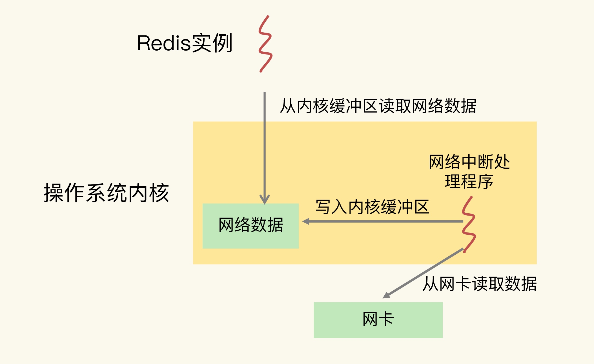
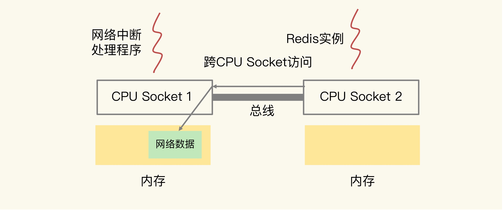

CPU架构对程序运行的影响
- L1、L2缓存中的指令和数据访问速度快，充分利用L1、L2缓存，可以有效缩短应用程序执行时间
- 在NUMA架构下，如果应用程序从一个socket上调用另一个socket上，很可能会出现远端内存访问情况，这回增加程序执行时间
CPU 多核对Redis性能影响
在 CPU 多核场景下，Redis 实例被频繁的调用到不同的CPU核上运行，Redis 实例处理请求的时间影响就会更大
可以通过绑定CPU可以有效的降低尾延迟
taskset -c 0 ./redis-server
CPU 的 NUMA 架构对Redis性能影响
网络中断程序从网卡硬件中读取数据，并把数据写入到操作系统内核维护的一个内存缓存区，内核通过epoll 机制触发事件，通知 Redis 实例，Redis 再从内核缓存拷贝到自己内存空间

在CPU 的 NUMA 架构下，当网络中断处理程序、Redis实例分别和CPU核绑定后，就会存在 若果网络中断处理程序和Redis 实例各自绑定CPU 核不在同一CPU socket中 ，Redis 读取网路数据时，就需要跨CPU Socket 访问内存

绑定风险和解决方案
Redsi 实例绑定到一个CPU 逻辑核上时，就会导致子进程、后台线程和Redis主线程竞争CPU资源。
一个Redis 绑定一个物理核,这样可以缓解CPU资源的竞争
taskset -c 0,12 ./redis-server优化Redis 源码把子进程和后台线程绑定到不同的CPU 核上
修改元绑定CPU核
实现绑定时要用到操作系统提供的1个数据结构cpu_set_t和三个函数CPU_ZERO、CPU_SET、sched_setaffinity
- cpu_set_t : 是一个位图，每一位表示CPU一个逻辑核
- CPU_ZERO : 以cpu_set_t为输入参数，把所有位图中的位设置为0
- CPU_SET : 以CPU 逻辑核编号和cpu_set_t 为参数，把位图中和输入逻辑核编号对应位置设置为1
- sched_setaffinity : 以进程/线程ID号 和cpu_set_t 为参数，检查cpu_set_t 哪一位为 1 ，就把输入的ID号所代表的进程/线程绑定对应得逻辑核
代码实现
//线程函数
void worker(int bind_cpu){
cpu_set_t cpuset; //创建位图变量
CPU_ZERO(&cpu_set); //位图变量所有位设置0
CPU_SET(bind_cpu, &cpuset); //根据输入的bind_cpu编号，把位图对应为设置为1
sched_setaffinity(0, sizeof(cpuset), &cpuset); //把程序绑定在cpu_set_t结构位图中为1的逻辑核
//实际线程函数工作
}
int main(){
pthread_t pthread1
//把创建的pthread1绑在编号为3的逻辑核上
pthread_create(&pthread1, NULL, (void *)worker, 3);
}
对于Redis 来说，bio.c中的bioProcessBackgroupJobs 函数中创建后台线程，在这函数中实现绑定核
int main(){
//用fork创建一个子进程
pid_t p = fork();
if(p < 0){
printf(" fork error\n");
}
//子进程代码部分
else if(!p){
cpu_set_t cpuset; //创建位图变量
CPU_ZERO(&cpu_set); //位图变量所有位设置0
CPU_SET(3, &cpuset); //把位图的第3位设置为1
sched_setaffinity(0, sizeof(cpuset), &cpuset); //把程序绑定在3号逻辑核
//实际子进程工作
exit(0);
}
...
}
Redis 生成RDB 和 AOF 日志重写的子进程分别是
- rdb.c 文件 ： rdbSaveBackgroud 函数
aof.c 文件 ： rewriteAppendOnlyFileBackgroud 函数
这两个函数都调用fork 创建子进程，在子进程diamante部分加上核绑定